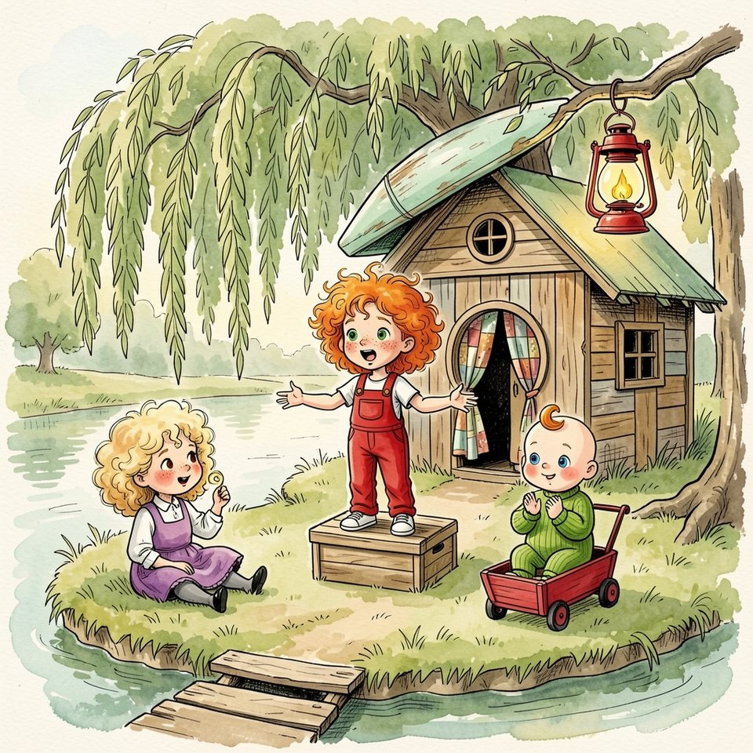

Titistoire › Les Comètes (6-8 ans)
Titou debout
Une année à Virevent, l'histoire du mois de mai : Jeanne, Gaspard, Suzie et Marin.

▶ Écouter et regarder l'histoire
Gratuit, sans inscription : la voix lit, le texte suit mot à mot, les images tournent comme dans un album.
Le texte de l'histoire
En mai, la Flânette sentait l'herbe coupée. Sur l'île, Jeanne avait allumé la lanterne rouge dans le saule. Lanterne allumée, cela voulait dire : réunion. Et réunion voulait dire : l'Expédition.
L'Expédition, c'était leur jeu, à Gaspard et à elle, depuis toujours. Elle racontait, il construisait. Elle annonçait un fleuve plein de crocodiles, il fabriquait un radeau avec trois caisses.
Tout commençait par les mêmes mots. Jeanne grimpait sur la caisse, écartait les bras : « Et alors, soudain… » Après ces trois mots-là, n'importe quoi pouvait arriver. C'était même le but.
Ce soir-là, il n'y avait que Suzie dans l'herbe, et Titou dans sa charrette rouge. « Et alors, soudain… » Personne ne demanda combien de crocodiles. Personne ne répondit que c'était impossible. « … dain ! » fit Titou.
« Il est peut-être au moulin… enfin, je crois », hasarda Suzie en tortillant une boucle. Cela faisait trois réunions que Gaspard oubliait. Jeanne souffla la lanterne et empoigna la charrette. « J'y vais. »
Au moulin, la sciure volait dans le soleil. Sur deux tréteaux reposait une chose longue et pâle, courbée comme une cosse de haricot. Gaspard tournait autour, un mètre pliant à la main.
« C'est pour l'Expédition ? » « Non. C'est un vrai bateau. » Il déroula une grande feuille couverte de traits. « Un plan. Deux mètres dix de long. Mon père m'a prêté son rabot. »
Jeanne regarda le plan dans un sens, puis dans l'autre. On n'y voyait ni crocodile, ni tempête. « Tu viens à la cabane ? On remonte un fleuve de lave ! »
« La lave, ça brûlerait la coque. » Il souffla sur la sciure. Puis, sans lever le nez : « On n'a plus l'âge, Jeanne. » Il avait lâché cela doucement, comme on referme une porte.
« Plus l'âge ? » Ils étaient nés la même semaine, sur la même berge. S'il n'avait plus l'âge, elle non plus, et personne ne l'avait prévenue. « … lâge ! » fit Titou. Elle tourna les talons.
Le lendemain, dans la cour, sous le cerisier aux cerises encore vertes, elle revint à la charge. Quand une histoire ne prenait pas, c'était qu'elle était trop petite. Il suffisait de trouver plus gros.
« Vous n'allez pas me croire ! Cette nuit, il y avait une baleine dans la Flânette ! » Gaspard ne leva pas les yeux. « La Flânette a un mètre vingt de fond. J'ai mesuré. »
« Justement ! Elle était coincée ! Il a fallu… » Jeanne retint son souffle. Ses joues s'arrondirent. « … trente mariniers pour la pousser ! Et un éléphant ! Un très gros ! »
Avant, il aurait demandé d'où sortait l'éléphant. Il aurait compté les défenses. Cette fois, il plia son plan en quatre. « Il me reste neuf planches à clouer. »
Jeanne resta seule sous le cerisier, sa baleine sur les bras. Une histoire que personne ne discutait, c'était un cerf-volant sans vent. Bon. Puisqu'il n'aimait plus que les chiffres, elle lui en donnerait.
Le samedi, elle se présenta au moulin, un crayon sur l'oreille, comme lui. « Je viens mesurer. » Elle empoigna le mètre pliant et le déplia à l'envers, en accordéon, avec beaucoup d'assurance.
« Cette planche fait quatorze. » « Quatorze quoi ? » « Quatorze ! » Elle mesura la suivante avec son avant-bras, puis avec sa chaussure. « Six bras et deux pieds. Donc à peu près un kilomètre. »
Gaspard essuya ses lunettes. « Premièrement, on ne mélange pas les bras et les pieds. Deuxièmement… » « Deuxièmement, ton bateau mesure sept Titou de long ! C'est plus pratique : on a toujours un Titou sous la main ! »
Il ne rit pas. Avant, il aurait ri, et noté « sept Titou » dans son carnet, pour vérifier. Il replia le mètre dans le bon sens. « Tu me fais perdre du temps, Jeanne. »
Elle rentra à la maison haute la tête droite et le cœur de travers. Dans l'entrée, Titou trônait dans sa charrette. Il lui tendit les bras. Lui, au moins, la trouvait intéressante.
Voilà quelqu'un qui ne changerait jamais. Titou avait quatorze mois, une seule boucle sur la tête, et il vivait assis. Il ne mesurait rien. Il ne clouait rien. C'était le compagnon rêvé.
Dès le dimanche, l'Expédition repartit, à deux. La butte aux Alouettes devint une montagne de glace. « Et alors, soudain… un ours blanc ! Grand comme le beffroi ! » « … froi ! » cria Titou, ravi.
Il était parfait. Il ne demandait jamais si c'était possible. Il riait aux bons endroits, tapait des mains aux mauvais, et réclamait toujours la suite.
Jeanne en rajoutait tant qu'elle voulait : dix ours, cent ours, mille. Personne ne l'arrêtait. C'était merveilleux. C'était aussi, par moments, un tout petit peu trop facile.
Avec Gaspard, une histoire, il fallait la défendre. Avec Titou, elle roulait toute seule, comme la charrette dans une descente. Jeanne chassa cette idée. Elle avait un public assis, fidèle, et qui ne bougerait pas.
Un matin, au lavoir, sa mère battait le linge, et les draps de onze enfants claquaient au soleil. Jeanne avait garé la charrette au bord du bassin. Elle préparait un naufrage.
« Et alors, soudain… » Titou n'écoutait pas. Il avait empoigné le bord de la charrette, et il poussait sur ses jambes en soufflant. Son derrière se décolla du coussin. Il fut debout.
Debout, il vacillait comme une quille. Il regarda le lavoir, le linge, le ciel, tout ce monde qu'il n'avait jamais vu de si haut. Puis il passa une jambe par-dessus le bord.
« Ah non ! » Jeanne le rassit. « Les explorateurs restent dans le bateau. C'est la règle. » Titou la considéra gravement. Puis il rempoigna le bord, poussa, souffla, et se remit debout.
Elle le rassit. Il se releva. Elle le rassit encore. Il se releva encore, plus vite : il prenait le coup. C'était la première fois que son public quittait la salle.
« Oh ! Il est debout ! » Suzie apportait le pain de la maison haute, six miches dans un panier. « … bout ! » répéta Titou, très fier, cramponné au bord.
« Il n'est pas debout, corrigea Jeanne. Il s'étire. » Elle le rassit pour la quatrième fois. « Il a toujours été assis. C'est sa façon d'être, à lui. » Titou se releva pour la cinquième.
Suzie enroula une boucle autour de son doigt. « Il veut peut-être descendre ?… enfin, je crois. » « Il veut écouter la suite. » Titou ne voulait pas la suite. Titou voulait le lavoir, et le canard qui passait.
Alors Jeanne alla chercher deux gros coussins. Elle en cala un à gauche, un à droite, et son frère au milieu, comme un œuf dans sa boîte. Il ne pouvait plus remuer que les sourcils.
Elle posa ses deux mains sur ses épaules, et appuya. « Voilà. Reste comme tu es. » Suzie ne répondit ni oui, ni oui oui. Elle regardait Jeanne d'un drôle d'air.
Le vent était tombé. Dans le bassin, l'eau s'était faite lisse comme une vitre. Jeanne se pencha pour reprendre son naufrage, et quelque chose, dans l'eau, arrêta son regard.
Il y avait là une fille rousse, les sourcils froncés, les deux mains plantées sur les épaules d'un bébé. Elle appuyait. Le bébé ne riait plus. Il regardait ailleurs, la bouche serrée.
Jeanne connaissait cet air-là. L'air de dire : ne bouge pas, ne change rien, reste où je t'ai rangé. Elle ne l'avait jamais vu sur sa propre figure. Il ne lui allait pas du tout.
Ses mains se retirèrent toutes seules, comme d'un poêle trop chaud. Titou leva vers elle ses yeux ronds. Il attendait de voir ce que sa sœur allait décider.
Elle ôta le coussin de gauche. Puis celui de droite. Puis elle prit son frère sous les bras, le souleva, lourd et chaud comme une miche, et le posa sur la pierre du lavoir.
Il tenait debout, cramponné à ses deux pouces. Ses pieds nus tâtaient la pierre tiède. Jeanne compta jusqu'à trois dans sa tête. À trois, elle ouvrit les mains.
Un pas. Les bras en balancier, le ventre en avant. Deux pas. La boucle rousse tremblait au sommet de son crâne. Trois pas ! Trois secondes de gloire.
Puis, pouf. Assis par terre. Jeanne se précipita. Mais il riait. Il riait aux éclats, la bouche grande ouverte sur ses six dents, comme si tomber était le meilleur moment.
Il poussa sur ses mains, et se releva. Tout seul. Sans lui tendre les bras, sans même la chercher des yeux. Et il repartit, droit vers le canard. Pas vers elle.
« Il marche », souffla Suzie. Jeanne avait la gorge serrée et envie d'applaudir, les deux à la fois, ce qui était très encombrant. Elle le suivit de loin, les mains dans le dos, pour les faire tenir tranquilles.
Le soir même, elle s'assit devant la cabane, le menton dans les mains. Titou faisait le tour de la charrette en se tenant au bord. Elle n'alluma pas la lanterne.
La planche craqua. Gaspard traversait, de la sciure plein les cheveux. Il ne s'excusa pas : il ne savait pas faire. Il remonta ses lunettes et regarda ses bottines.
« Il est fini. Je l'ai mesuré trois fois : il est juste, au millimètre près. » « Et alors ? » « Et alors rien. Il est sur ses tréteaux. Il ne va nulle part. »
Il gratta l'herbe du bout du pied. « J'ai cherché sur le plan où aller avec. Ce n'est pas marqué. » Il avala sa salive. « Il me faudrait… une destination. »
Jeanne aurait pu répondre qu'on n'avait plus l'âge. C'était là, tout prêt, sur sa langue. Elle regarda Titou, qui lâchait la charrette d'une main. Puis elle grimpa sur la caisse et écarta les bras.
« Et alors, soudain… » Le lendemain, au moulin, ils embarquèrent sans quitter les tréteaux. Le bateau sentait le bois neuf. Gaspard tenait les rames, Suzie tenait les deux bords, et Jeanne, à l'avant, tenait l'horizon.
« … soudain, le fleuve se sépara en deux ! À gauche, des rapides ! Énormes ! » Gaspard ne répondit pas que c'était impossible. Il retourna son plan. Le dos de la feuille était tout blanc.
« À quelle distance, tes rapides ? » « Mille lieues ! » « Je note : quarante mètres. » Et il les dessina, à la règle. Jamais une histoire de Jeanne n'avait eu de carte juste. Jamais un plan de Gaspard n'avait eu de rapides.
« Et au bout ? » « Au bout de l'île, là où personne n'a jamais accosté : un continent inconnu ! » « Alors il faudra planter un drapeau. J'ai prévu un bâton. » Jeanne en resta muette, une seconde entière.
« Et il lui faudra un nom, à ce bateau. J'en ai déjà trente ! » « C'est bien ce qui m'inquiète. » « On en reparlera quand le vernis sera sec ? » proposa Suzie, qui sentait venir l'orage.
Le soir tombait quand Jeanne passa reprendre Titou au lavoir. Madame Bogue allumait le réverbère du coin. Les fenêtres de la maison haute s'éclairaient une à une, et l'on entendait le bruit des assiettes.
« En route », annonça Jeanne en avançant la charrette rouge. Titou examina la charrette. Il examina sa sœur. Puis il passa derrière, posa ses deux mains sur le rebord, et poussa.
La charrette roula, vide, sur les pavés. Titou marchait derrière, sérieux comme un marinier à la barre. Il tomba deux fois. Deux fois Jeanne garda ses mains dans son dos, et il se releva.
« Et alors, soudain… » murmura-t-elle tout bas, pour personne. « … dain ! » répondit Titou sans se retourner. Il avait autre chose à faire. Il avait une charrette à rentrer.
Elle le suivit, trois pas en arrière. Là-haut, la comète du beffroi luisait encore un peu. Titou cogna la charrette contre la marche, la cogna encore, et entra le premier.